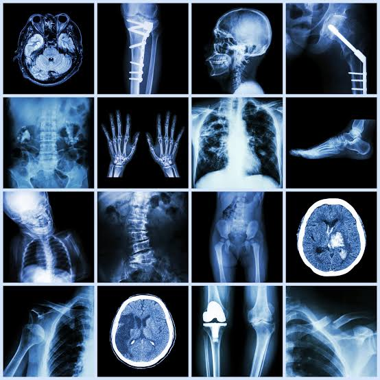
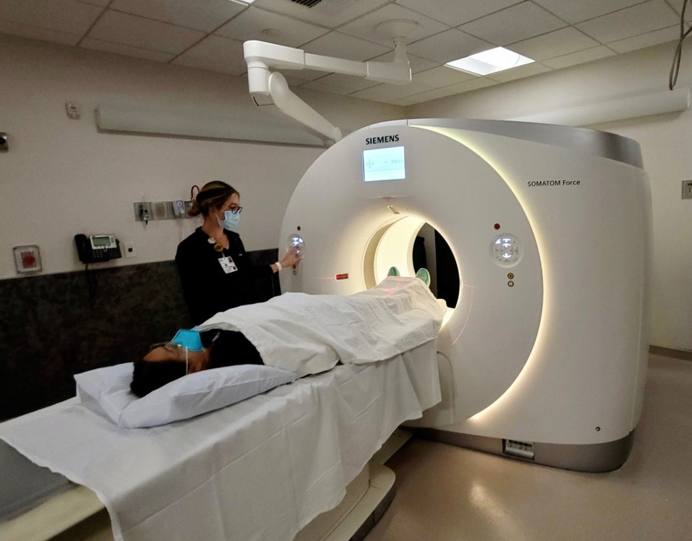
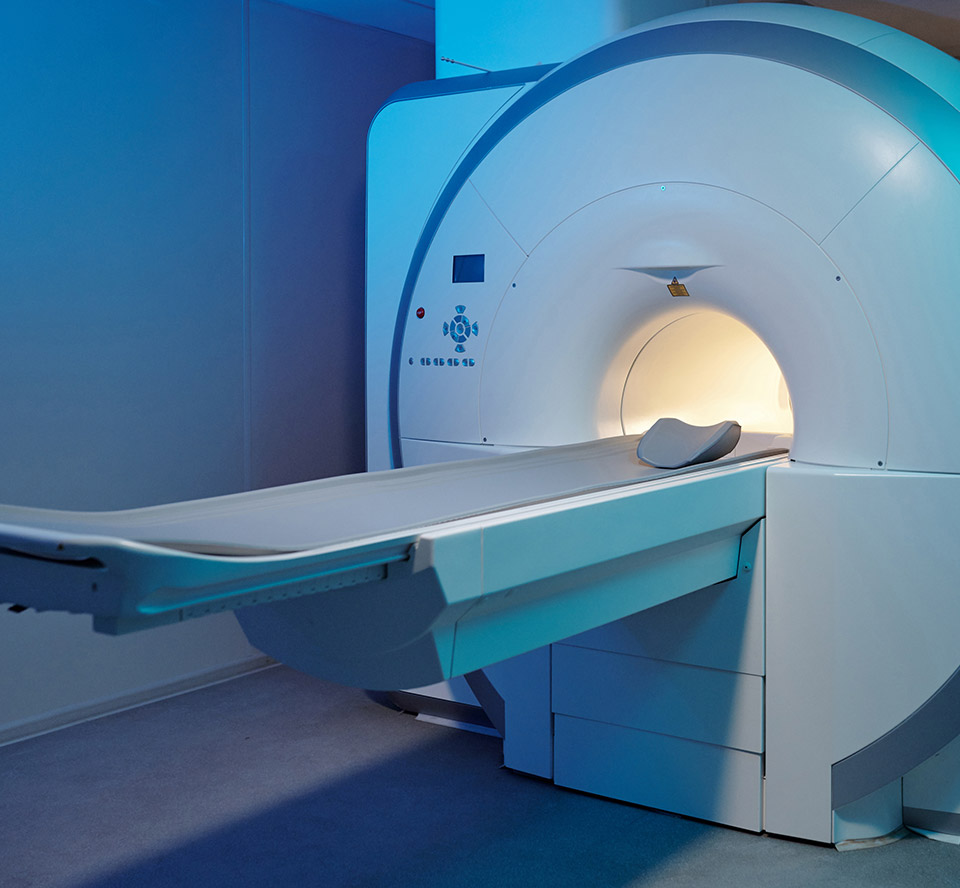

Discover how X-Ray, CT, MRI and Ultrasound use different physical principles to create medical images.
Explore ModalitiesExplore four major medical imaging technologies and understand the physical principles behind them.

X-Ray imaging uses ionizing radiation to create projection images of internal structures. It is widely used for bones and chest imaging.
Ionizing Radiation
Computed Tomography combines multiple X-Ray measurements with computer processing to create cross-sectional images.
X-Ray + Computing
Magnetic Resonance Imaging uses a strong magnetic field and radio waves to produce detailed images, especially of soft tissues.
Magnetic FieldUltrasound uses high-frequency sound waves to create images and can provide real-time visualization of moving structures.
Sound WavesA simplified educational comparison of the four imaging technologies.
| Technology | Principle | Radiation | Main Strength |
|---|---|---|---|
| X-Ray | X-Rays | Yes | Bones / Chest |
| CT | X-Rays + Computing | Yes | Cross-sectional detail |
| MRI | Magnetic field + RF | No ionizing radiation | Soft tissues |
| Ultrasound | Sound waves | No ionizing radiation | Real-time imaging |
Identify the medical imaging technology based on its physical principle or common application.